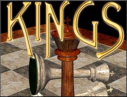

Hacked by Snow
Russian security chief asks media's
help in Chechen war
February 3, 2000
Web posted at: 8:04 AM EST (1304 GMT)
MOSCOW (AP) -- The secretary of Russia's Security Council has called on the media
to join the government's efforts to defeat Chechen rebels and not to allow militants
any airtime.
In an interview published Thursday in the daily Komsomolskaya Pravda, Security
Council Secretary Sergei Ivanov claimed he was not "encroaching on the freedom of
speech, but there must be limits and a precise understanding of what can and cannot
be done."
"Use Chechen informers if you want. Just don't put
terrorists on the air," he was quoted as saying.
If you deny the right to media attention
you are also helping to hide the war crimes
that are being commited by russia.
Freedom of information.
Isnt that what we are about?
When LOU declared war on China's infrastructure
a good portion of the hacker culture put the effort
down on the grounds that shutting down the information
flow of any country would be a violation of ethics.
Is this different?
If we deny media attention. We do open the portal for
the verified civilian killings by Russian to continue
with even less notice from the general public.
We know that unless there is heavy public push to
get involved in this and put a stop to the Russian
slaughter-fest our government will not get involved.
Why?
Because we are too ph33rful of stepping on somebodies
little toes. Why? Pure political tip-toeing.
So damnit, do something about it.
Or are you scared too?
Oh yeah, before I forget.
Special note to VSO Inc.
FuQ
Snow gives huge hugs to:
Mad Cracker
YT Cracker
co0kie
Cinda
Madfriend
The PHC
Keebler
ALKQN
And a personal word to the kid on the river walk:
You are not a hacker. Please stop using l33t at school.
People that suck:
VSO Inc.
Russian Govt
Indian Govt
DSK Kiddies
Tre Gangster Crips
RIS
The Ed0phile
Detective Rowe
And co0kies evil cat
P.S. Rename oldindex.htm to index.htm to fix your site
I do honestly apologize for this outrage.
It would be pointless to try to track me down
and cost much more then the 10 seconds of work
you will need to do to rename the file.
Please understand that I use this as a means of
getting a political message out
And I have patched the hole that I used to gain
entry to your system in return for the headache.
I did not view, or damage any of your data
And the only other data that I have edited
was your log file. You understand why.
Oh, and btw, this is the sloppiest HTML I have ever done.
-Snow